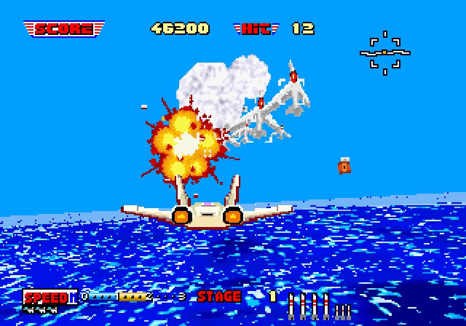
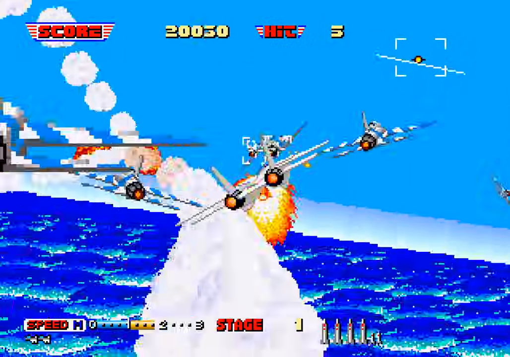
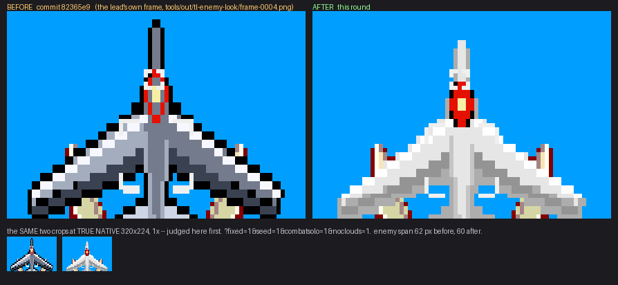
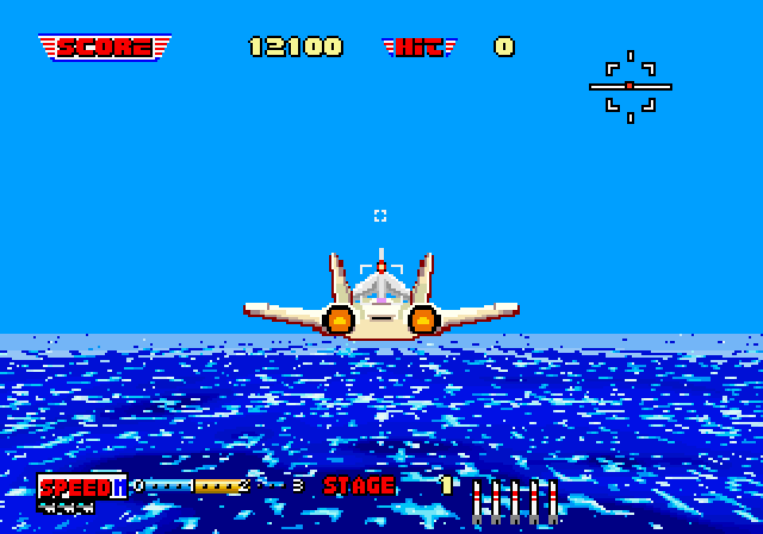
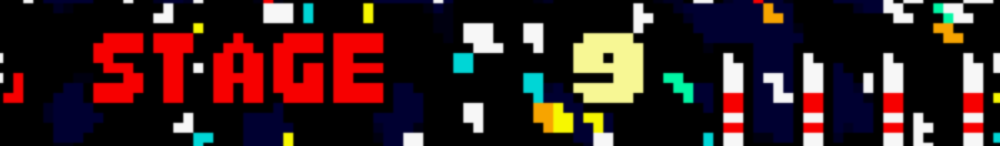

Judge trend 3 → 4 → 6 → 7 → 7.5 → 8 → 8 → 8.5 · still FAIL
A player would not mistake stage 1 for After Burner II, and the reason is no longer subtle: the arcade puts two aircraft in front of you and we put seven.
Round 8 went after the playing rather than the rendering, and it worked: the gun no longer kills what the player cannot see, the sky is fuller rather than emptier, the stage counter counts, the last objects are on the hardware ladder, and the owner's enemy-art blocker is closed. Criterion A is now satisfied by construction — a module-load assertion on the authored constants — and the judge could not break it across 275 frames.
It moves half a point because three of the round's own gates are missed, and because its deepest finding was right by the wrong argument. The combat lane concluded the kill rate is the spawner's, not the gun's — correct — and reasoned that the arcade must let ~67% of traffic fly past. It does not. There is simply far less of it: the arcade emits 0.4–0.74 aircraft/s and kills most of them; we emit 2.83–3.20/s.
| measure | before | after | gate / arcade |
|---|---|---|---|
| gun kills below the 10 %W readable gate | 79.1% | 0.0% | ≤10% |
| deepest gun kill in 720 s | depth 59.8 | 9.4 | readable band |
| ticks with a readable aircraft on screen | 27.3% | 79.6% | ≥60% |
| worst drought with nothing to shoot | 6.45 s | 2.40 s | autopilot 3.30 |
| neutral stick vs tracking pilot | 80.6% | 64.0% — missed | ≤40% |
| stage digit at 300 s | "2" | STAGE 9 | counts to 15+ |
| title screen | 53 chan / 44 off-ladder | 15 / 0 | ≤32 / 0 |
| Criterion A across stage boundaries | 118 of 4,200 ticks over | 0 of 12,600 | 0 |
| enemy sprites rimmed in pure black | 16 of 16 sheets, 100% | 0.0–2.1% | arcade has none |


Kills now happen where the player can see them: median kill size 8.20 → 11.05 %W, and nothing below the readable gate. The sky is fuller after the fix, not emptier.


All sixteen enemy sheets were 100% near-black on their perimeter while the player jet beside them was 0%. The arcade has no black outline on any aircraft — R7 measured that and applied it to the player only.

Was stageIndex % 3 + 1 — capped at 3, so a 300-second run displayed "2". The arcade's counter reads 1, 2, 3, 4, 6, 8, 10 … 15 and goes two digits.
MAX_ALIVE = 14 was swept against one of our own gates with no arcade side ever measured. Worse: its justification — "two thirds of spawns are shot down before they reach readable size" — was removed by Round 8's own fix, which makes it impossible for the gun to kill below 10 %W at all. R8 deleted the reason for its own spawn rate and did not revisit it.drawRearFar() is a rectangle by construction — and it was never caught because it is a declared exception in the source, "so every audit that read the comment stopped reading".